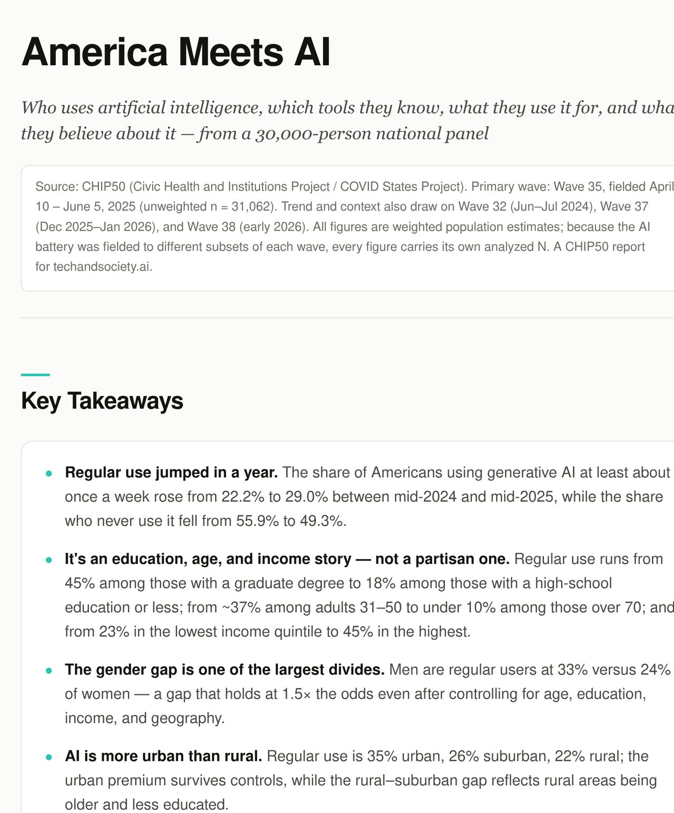

July · Tests and CI
Tests run before every deploy
We made the test harness runnable, wrote a failing test for each known bug, and made CI run the suite before anything deploys.
CHIP50 MCP · Status update, October 2026
What we built, cleaned up and wrote down
GitHub links need access to the techandsociety-ai organization.
July
Failing tests for known bugs, CI before every deploy, checks against published reports.
August
Raw files in one bucket, codebook labels, a clean loader, access by allowlist.
September
Three servers from one codebase, the AI survey server and a hosted chat.
October
Wave 38 complete, sentinel on a schedule, ChatGPT, a maintenance guide and alerts.
As of Oct. 15: 126 pull requests merged on mcp-server since July 17, and 73 issues closed.

July · Tests and CI
A gold-standard job replays figures from published CHIP50 reports through the server and compares the numbers. Results post to the test-status page.
August · Data cleanup
All 47 raw SPSS wave files sync to a Cloud Storage bucket: the ground truth upstream of BigQuery.

mcp.techandsociety.ai
ai.techandsociety.ai
sentinel.techandsociety.ai
September · The AI profile
chat.techandsociety.ai, rebuilt on the project’s own cloud account, lets people on the AI survey roster ask questions without setting up Claude.
October · Ready to hand off
A maintenance guide with runbooks, CI pinned ahead of GitHub’s runner change, and email alerts when a scheduled job fails.
Next phase
#52: split the 4,978-line server.py into modules. No behavior changes.
A very careful pass to simplify and clean up what’s there.
#51: the crosstab tools share one query, suppress and label path.
Also open: move chat to a project-owned Anthropic key, and the loose ends in MAINTENANCE §13.